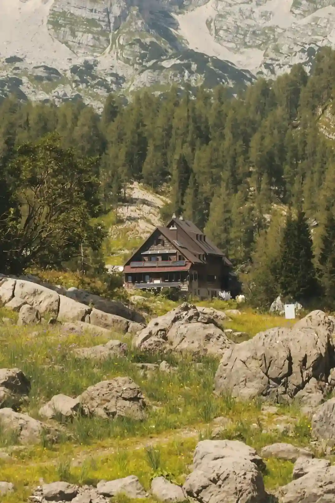

O nasi chate
Když vkročíte do naší chaty, jako byste vstoupili do jiného světa. Vůně lesa, hřejivé dřevo a praskání ohně v krbu vás okamžitě přimějí zapomenout na každodenní spěch a ruch velkoměsta.
Je to ideální útočiště pro víkendy s přáteli, rodinné výlety i chvíle, kdy potřebujete prostě jen vypnout a dobít baterky. Tady, v samotném srdci divoké přírody, najdete svůj zasloužený klid.
